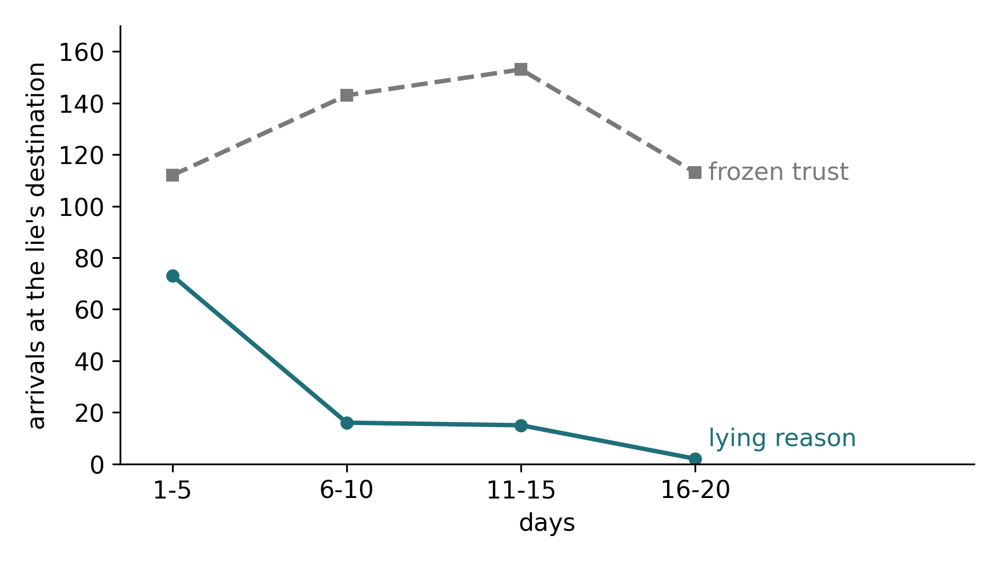
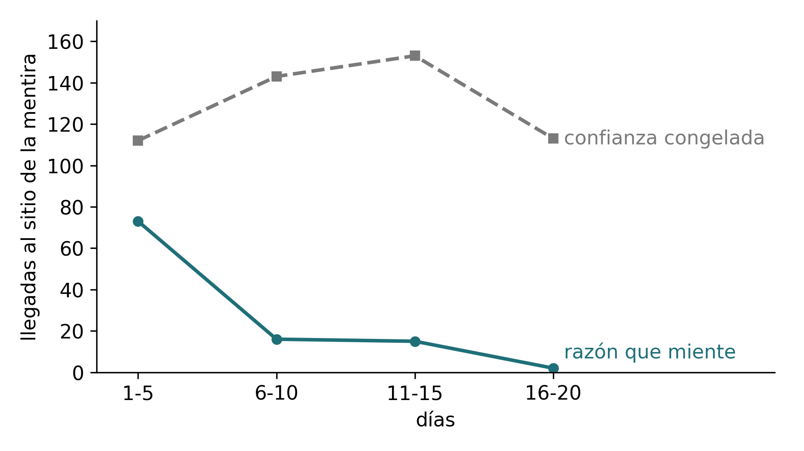

G-EMV: Emotion and Reason in an Agent. Learning by Living: A Creature, Its Sister and a Reason That LiesG-EMV: emoción y razón en un agente. Aprender viviendo: una criatura, su hermana y una razón que miente
Independent researcher, Barcelona · Independent researcher, Los AngelesInvestigador independiente, Barcelona · Investigador independiente, Los Ángeles
This work asks whether an artificial creature born without knowing what the things in its world do can find out by living, guided by what it feels. The creature is a homeostatic body that seeks its own balance among needs that pull in opposite directions, with no reward and no training. It now remembers from one day to the next, and each memory keeps what happened, in what situation, how it felt and what it was doing.
Este trabajo pregunta si una criatura artificial que nace sin saber qué hacen las cosas de su mundo puede descubrirlo viviendo, guiada por lo que siente. La criatura es un cuerpo homeostático que busca su propio equilibrio entre necesidades que tiran en direcciones opuestas, sin recompensa ni entrenamiento. Ahora recuerda de un día para otro, y cada recuerdo guarda qué pasó, en qué situación, cómo se sentía y qué estaba haciendo.
Alone, it learns what acts quickly and can be seen, like a medkit, and we did not see it fall behind a creature born knowing; it struggles with what heals little and does not see what acts by its absence. With a sister who tells it what she lived, both end up believing the same things, and the one who has lived less herself learns more from her sister. With a reason, a language model that reads the diary of its day each night and makes proposals, the creature does not obey: trust in the reason is earned by comparing what was promised with what was lived, dimension by dimension, and it ends high after true proposals and low after false ones. Faced with a lie we planted on purpose, one that led it to an empty place, the creature stopped following it as its trust fell; with its trust frozen, it kept going. Counted as sealed, the effect is clear; counted in the strictest way, it keeps its direction but sits at the limit.
Sola, aprende lo que actúa rápido y se ve, como un botiquín, y no vimos que se quedara atrás de una criatura que nace sabiendo; le cuesta lo que cura poco y no ve lo que actúa por ausencia. Con una hermana que le cuenta lo que vivió, las dos acaban creyendo lo mismo, y la que menos ha vivido por sí misma aprende más de su hermana. Con una razón, un modelo de lenguaje que lee cada noche el diario de su día y le hace propuestas, la criatura no obedece: la confianza en la razón se gana comparando lo prometido con lo vivido, dimensión a dimensión, y acaba alta después de las propuestas verdaderas y baja después de las falsas. Ante una mentira que pusimos nosotros a propósito, que la llevaba a un sitio vacío, la criatura dejó de seguirla cuando su confianza bajó; con la confianza congelada, siguió yendo. Contado como lo sellamos, el efecto es claro; contado de la manera más estricta, mantiene la dirección pero queda en el límite.
Every prediction was sealed before playing, and two external reviews were addressed before publication. The engine is the published G-EMV model, unchanged.
Cada predicción se selló antes de jugar, y antes de publicar se atendieron dos revisiones externas. El motor es el modelo G-EMV publicado, sin cambios.


Figure 5.1. Arrivals at the lie's destination in each five-day stretch of the final field, summed over the sixteen series. The creature that adjusts its trust stops going; the one with frozen trust keeps going. Both received almost the same proposals in each stretch, so the drop does not come from being offered less.
Figura 5.1. Llegadas al sitio de la mentira en cada tramo de cinco días del campo final, sumadas sobre las dieciséis series. La criatura que ajusta su confianza deja de ir; la de confianza congelada sigue yendo. Las dos recibieron casi las mismas propuestas en cada tramo, así que la caída no viene de que se le propusiera menos.
PaperArtículoCodeCódigoLeer en español (PDF)
Paper seven: fourth part of the series on emotion and reason in an agent. Concept DOI (all versions): 10.5281/zenodo.23674081. Code, reports and data: github.com/Manelenrico/g-emv/paper7.
Trabajo siete: cuarta parte de la serie sobre emoción y razón en un agente. DOI de concepto (todas las versiones): 10.5281/zenodo.23674081. Código, informes y datos: github.com/Manelenrico/g-emv/paper7.